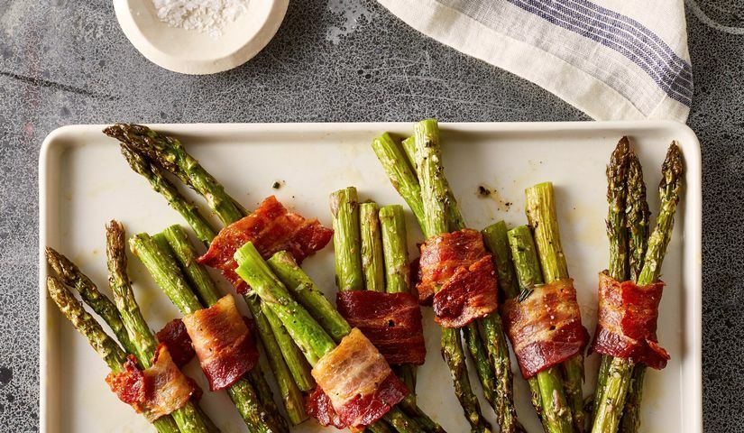

Ингредиенты:
Спаржа зеленая - 30 шт.
Бекон (копченый, нарезка) - 150 г
Масло оливковое - 1 ч.л.
Сливки (не менее 20%) - 200 мл
Сыр (Тильзитер, Моцарелла) - 200 г
Орех мускатный - на кончике ножа
Перец черный (молотый) - по вкусу
Тимьян (сушеный) - 1 щепотка
Соль - по желанию
Рецепт:
Для приготовления блюда понадобится свежая зеленая спаржа.
Для соуса я использовала сливки 30% жирности, сыра у меня два вида: полутвердый Тильзитер и мягкая Моцарелла для запекания. Эти сыры хорошо плавятся, но можно взять любой сыр по вкусу. Сыр натираем на мелкой терке.
В подходящую кастрюлю наливаем небольшое количество воды, доводим до кипения. Вода нужна для бланширования спаржи. Я воду не подсаливала.
Также нам понадобится миска с ледяной водой - для быстрого охлаждения спаржи, чтобы она не потеряла свой красивый зеленый цвет.
У спаржи отрезаем жесткие кончики, они нам не понадобятся.
Кладем подготовленную спаржу в кипящую воду и бланшируем при слабом кипении в течение 5 минут. Далее сразу же перекладываем спаржу в ледяную воду и даем остыть.
Остывшую спаржу вынимаем из воды, просушиваем бумажным полотенцем и оборачиваем полосками бекона. Можно обернуть каждую спаржу отдельно, а можно сделать пучки, завернув в бекон по 3-5 стеблей спаржи вместе.
Сковороду-гриль смазываем оливковым маслом и разогреваем на огне выше среднего.
Выкладываем спаржу в беконе на раскаленную сковороду и быстро обжариваем со всех сторон до румяного цвета бекона.
Пока обжаривается спаржа в беконе, приготовим соус. Для этого в сотейнике (или на сковороде) доведем до кипения сливки, предварительно добавив в них мускатный орех, черный перец и тимьян, а также соль по вкусу, если сыр не сильно соленый.
В закипающие сливки выложим сыр, натертый на мелкой терке и, помешивая, будем готовить на самом маленьком огне, пока сыр полностью не расплавится. На это уйдет 2-3 минуты.
Подаем спаржу в горячем виде. Она получилась очень нежной в хрустящем беконе. И, конечно, щедрое количество сырно-сливочного соуса.
Приятного аппетита!